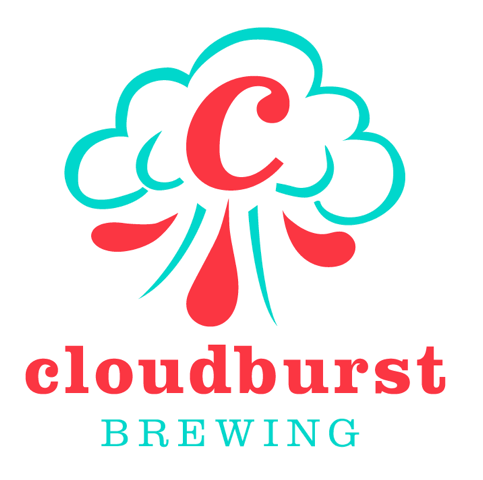

Seattle Brewery Finder

Cloudburst Brewing
Just weeks after Elysian Brewing was purchased by Anheuser-Busch, veteran brewer Steve Luke left his long time position with Elysian to branch off and start Cloudburst Brewing. Cloudburst Brewing sports a no-frills brewery and taproom in the heart of Seattle, serving as a landing spot for beer aficionados to try some of the most well crafted beers the city of Seattle has to offer. Cloudburst offers a limited selection of pre-filled growlers, otherwise you will only find their beers on tap at various establishments. Probably best known for their IPAs, Steve’s dedication to the craft has built quite a reputation for the still relatively young brewery.
Not satisfied with your current choice?
- Cloudburst Brewing Website
 Facebook
Facebook Twitter
Twitter Instagram
Instagram Untappd
Untappd
- 2116 Western Avenue
- Seattle, WA 98121
- 2116 Western Avenue
- Seattle, WA 98121
- Monday - Tuesday: Closed
- Wednesday - Friday: 2pm - 10pm
- Saturday: 12pm - 10pm
- Sunday: 12pm - 8pm
- 206-602-6061
- info@cloudburstbrew.com